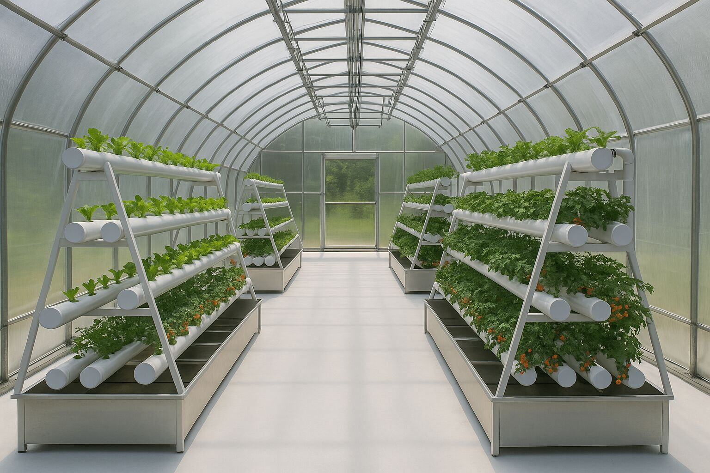
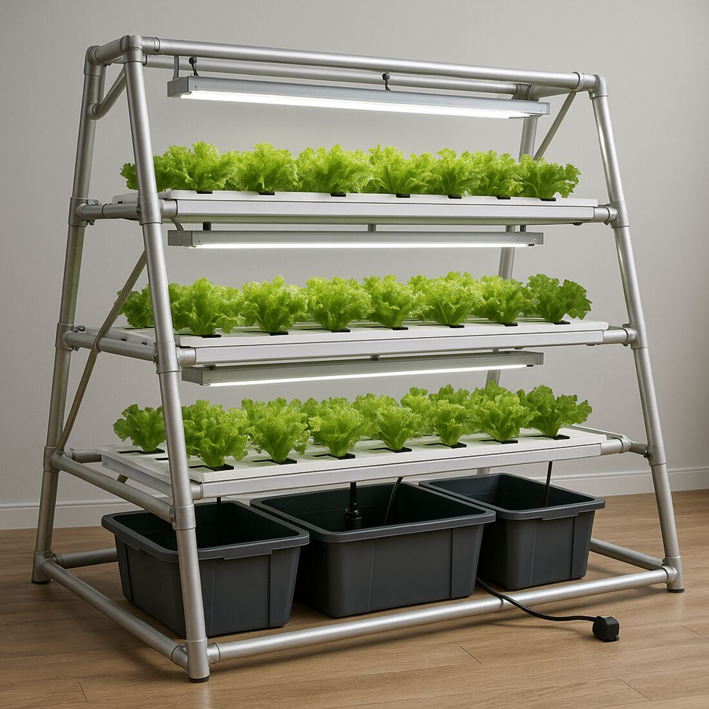

One tank for every stage
A single shared solution makes it impossible to tune pH, EC and nutrient balance to each cohort.
→ One sealed loop per level, no backflow.

HydroLoop Farm is a modular A-Frame hydroponic system with three independent nutrient loops and a continuous cohort rotation — so a module harvests every 20–27 days, all year. A companion app follows every batch from seed to harvest.
Conventional vertical NFT systems stack plants but treat them as a single crop. HydroLoop was designed around the fact that every stage of a plant's life needs something different.
A single shared solution makes it impossible to tune pH, EC and nutrient balance to each cohort.
→ One sealed loop per level, no backflow.
Stacked shelves leave the bottom rows in the dark and the harvest uneven.
→ Staggered A-Frame, 10 cm anti-shading offset.
Batch systems empty, clean and replant — weeks with no output and irregular cash flow.
→ Calibrated cohort rotation, continuous output.
Regulated buyers need batch-level records that most farms can't produce reliably.
→ A digital passport for every cohort.
A self-supporting A-Frame in galvanised steel or anodised aluminium carries three levels of food-grade PVC NFT channels. Each level is its own growing chamber, with a dedicated reservoir, pump and aeration.
Young plants arrive from the nursery at day 10 and build roots and leaves in the bottom loop.
Plants elongate and transition, with a richer solution and more space — in a loop of their own.
Mature plants take the top position, closest to the light, until harvest.
Channels run at a 2% slope (40 mm over 2 m) for a laminar nutrient film of 1–3 mm. No soil, no substrate: roots sit in a recirculating film, so water is reused instead of drained.
Plants don't stay put. At every interval, each cohort climbs one level, the top cohort is harvested and a fresh one enters at the bottom. The module is never empty — and never idle.
In a separate nursery, outside the module.
A cohort of 16 plants per level joins the bottom loop.
Moved up; the solution and spacing change with it.
Top position, strongest light, maturation profile.
Fresh-frozen at −40 °C, level cleaned in place, next cohort moves up.
Illustration with a 20-day interval. The real interval is 20–27 days, depending on the cultivar.
Both versions share the same structure, the same independent loops and the same rotation. Only the light changes.
Built for heated greenhouses, from the coast to the mid-mountain areas of the Rif.

For opaque rooms or insulated containers, with full control of every parameter.
Each module comes with the HydroLoop Farm Manager, a web app developed by AIWorkPay that installs on any phone. Growers log a batch in a few taps, see what needs attention and get a clear report on what to adjust.
Batch ID, cultivar, sowing date, module, phase and day — plus pH, EC, solution temperature, dissolved oxygen, NFT flow, PPFD and photoperiod.
Flags readings outside the safe range: pH below 5.5 or above 6.5, dissolved O₂ under 6 mg/L, solution above 22 °C, low NFT flow.
A structured analysis of roots, leaves, trims and flowers for each batch, with system inefficiencies and recommendations you can act on today.
Estimated harvest date and window, with a confidence level and what to check on the plants as the date gets closer.
Print a label for each cohort. Scanning it opens the batch record — the base of the Taqnin ID Batch passport.
Batches by cultivar, alert frequency, phase distribution, environmental averages and side-by-side comparisons of the same cultivar.
Installs like a native app and keeps working in the greenhouse without signal. Records sync to the cloud when the connection returns.
Login-protected, so batch data stays with the farm and the people it chooses to share it with.
Roots: dense, cream-white, no sign of disease. Action: lower solution temperature by 1–2 °C and keep aeration at its current level.
Illustrative screen — sample data · App by AIWorkPay
Each cohort gets a unique Taqnin ID Batch identifier the day it enters the module. Genetics, operators, dates, environmental readings, harvest weight and cold-chain data are attached to it — ready for regulated buyers and auditors.
HydroLoop is designed for markets that require documented, reproducible plant material: medicinal and pharmaceutical botany, nutraceutical actives and cosmetic ingredients, including the regulated medicinal sector opened by Morocco's Law 13-21.
| Frame | Self-supporting A-Frame · galvanised steel or anodised aluminium 6060 T5 |
|---|---|
| Dimensions | 2.0 m (L) × 2.0 m (W) × 1.5 m (H) · 4 m² footprint |
| Growing levels | 3 levels of food-grade, UV-resistant PVC NFT channels · 200 / 300 / 400 mm · staggered with 10 cm anti-shading offset |
| Capacity | 48 plants per module · 16 per level |
| Nutrient loops | 3 fully independent closed loops · no backflow between levels |
| Reservoirs | HDPE · 100 L (N1) · 50 L (N2) · 50 L (N3) |
| Hydraulics | Submersible pump per loop, ≥ 30 L/min · Ø25 mm supply / Ø32 mm return · forced aeration · clean-in-place fittings |
| Channel slope | 2% (40 mm over 2,000 mm) · 1–3 mm laminar film |
| Monitoring | Independent pH, EC and temperature probes per loop, with automated alerts |
| Rotation | Cohort moves up every 20–27 days · 13.5 to 18.25 harvests per year depending on cultivar |
| Lighting | Farm: sunlight + automatic LED top-up · Inside: per-level full-spectrum LED |
| Water | > 80% less water than soil-based growing |
| Post-harvest | Fresh-frozen at −38 / −40 °C |
| Intellectual property | Patent application by Ahmed Akafou · OMPIC (Morocco) · PCT extension planned · IPC A01G31/02 |
HydroLoop was designed in Taounate to help Moroccan cooperatives produce more value per square metre with less water — and to create skilled jobs for young people in rural areas.
Three levels on the same footprint, so limited land produces more.
A closed loop with no drainage to soil or groundwater — critical in a drought-exposed region.
Hydroponics technicians, quality and traceability officers, harvest and maintenance staff.
HydroLoop Farm is a modular vertical hydroponic system designed in Morocco. A self-supporting A-Frame (2.0 × 2.0 × 1.5 m) carries three levels of NFT channels, each with its own independent nutrient loop, and plants move up one level every 20–27 days so the module harvests continuously.
HydroLoop Farm was designed by Ahmed Akafou, who is also the patent holder. The patent application was filed with OMPIC (Morocco), with a PCT international extension planned.
48 plants per module: 16 plants on each of the three levels.
Every 20 to 27 days depending on the cultivar, which is 13.5 to 18.25 harvests per year, with no idle period between cycles.
More than 80% compared with soil-based growing, because the nutrient solution recirculates in closed loops with no drainage.
Both share the same frame, loops and rotation. HydroLoop Farm runs in a heated greenhouse on natural sunlight with automatic LED top-up; HydroLoop Inside runs in an opaque room or container with full-spectrum LED differentiated per level and sensors for temperature, humidity, CO₂, pH and EC.
The HydroLoop Farm Manager, developed by AIWorkPay, logs each batch from seed to harvest, raises alerts on pH, EC, dissolved oxygen, solution temperature and NFT flow, produces an AI agronomy report, predicts the harvest window, generates a QR code per batch, shows analytics and works offline with cloud sync. It is available at https://app.hydroloopfarm.com.
Each cohort receives a unique Taqnin ID Batch identifier recording genetics, operators, dates, environmental readings, harvest weight, freezing curve and destination, aligned with GACP, pre-GMP, ANRAC (Law 13-21) and ONSSA requirements.
Email contact@aiworkpay.fr or call / WhatsApp +33 6 02 40 51 47.
Cooperatives, investors, research institutes and regulated buyers: we'd be glad to show you the module, the app and the pilot plan.